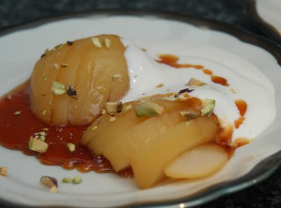

| Zutaten für 4 Personen: | |
| 100 g | Zucker |
| 0.5 l | heisses Wasser |
| 1 El | Zitronensaft |
| 4 | Birnen, geschält und halbiert |
| 200 g | Blanc Battu |
| wenig | Ingwer, frisch geraffelt oder 2 Messerspitzen Zimtpulver |
| 2 Prisen | Salz |
| 8 | Pistazienkerne, grob gehackt |
Den Zucker in einer weiten Chromstahlpfanne caramelisieren. Wenn er schäumt, vom Feuer nehmen und das heisse Wasser sorgfältig dazugiessen.
Den Zitronensaft dazugiessen. Den Zitronensaft und die Birnen beifügen und 10 bis 15 Minuten kochen, bis die Birnen weich sind.
Diese aus der Flüssigkeit heben und auskühlen lassen. Die Sauce auf 1 dl einkochen und auf 4 flache Teller verteilen. Die Birnen fächerartig einschneiden und auf die Teller setzen, dabei ein wenig flachdrücken.
Blanc Battu würzen und Löffelweise auf die Teller anrichten. Mit Pistazien bestreuen.
Züri Woche 13. Oktober 1994
Das sieht ja fast schon wie Haute Cuisine aus! Mit etwas Geschick kann man da sicher etwas fürs Auge daraus machen! Ich habe die Resten einer Birnen-Dose verwertet und Zitronensaft aus der Spritze genommen was bei Sandra nicht gut ankam. Auch habe ich es mit dem Ingwer gut gemeint was dann ein bisschen "overpowering" war. Ansonsten aber ein sensationelles Dessert! RE 15.7.2009